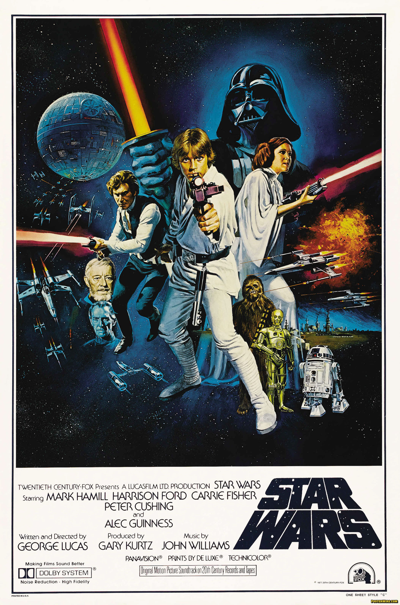
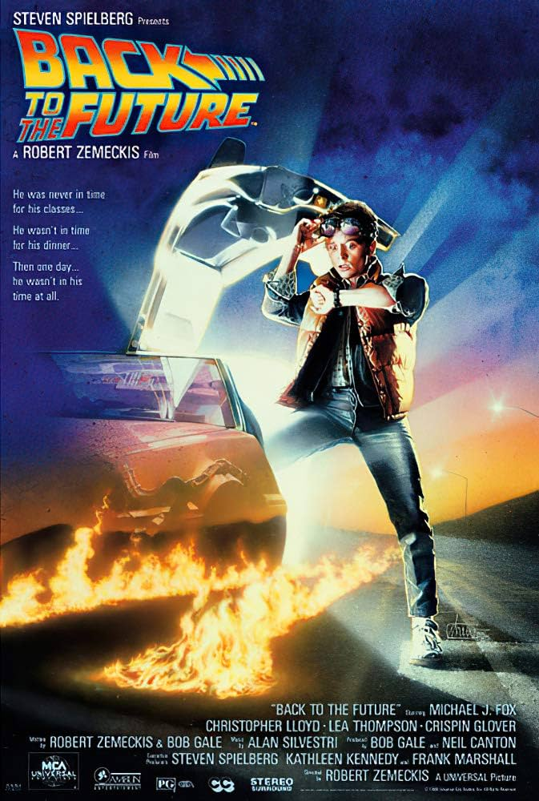
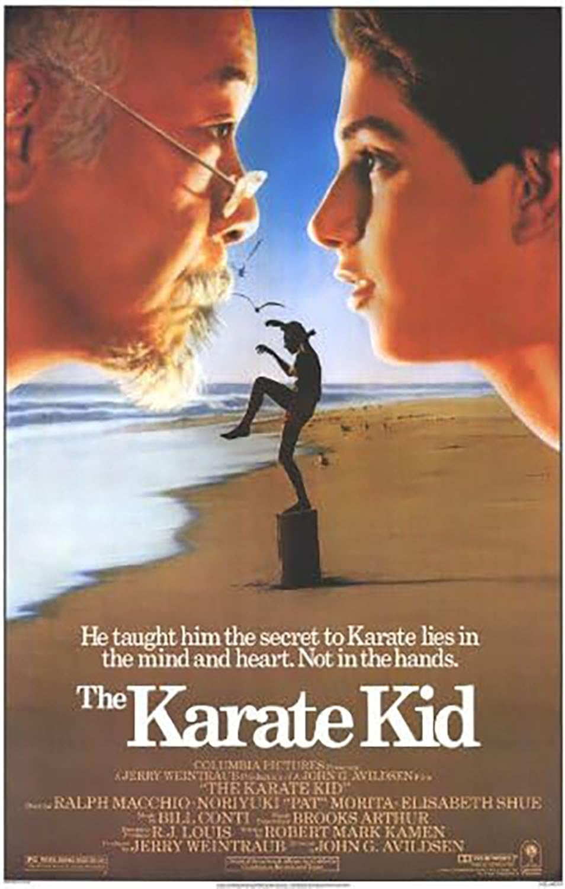

Una historia acerca de un joven que se embarca en una misión espacial en medio de una guerra entre el malvado Imperio Galático y la Rebelión. Es mi película favorita ya que es la primera de todas y la que me enganchó a mi saga favorita, además me llama mucho la atención el cómo hicieron toda una película de ciencia ficción y fantasía usando los efectos prácticos que había en esa época, y lo bien que quedaron.
Una película acerca de un chico que accidentalmente viaja al pasado y cambia su historia. Una de mis películas favoritas desde niño y probablemente la que me hizo que me encantara la ciencia ficción.
Una historia acerca de un chico que al mudarse conoce a un maestro de Karate que lo comienza a entrenar para defenderse y para participar en un torneo. Es una película que me recuerda mucho a mi infancia pues la recuerdo haber visto muchas veces con mi papá y con mi abuelita, y con la que yo me identificaba mucho pues el personaje principal se llama Daniel igual que yo, y yo de pequeño me gustaban mucho las artes marciales.
